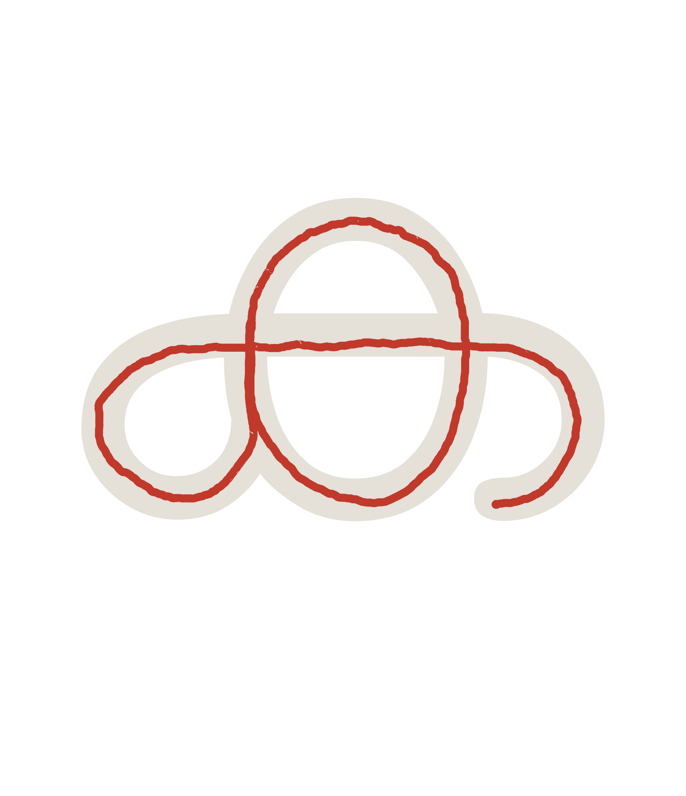
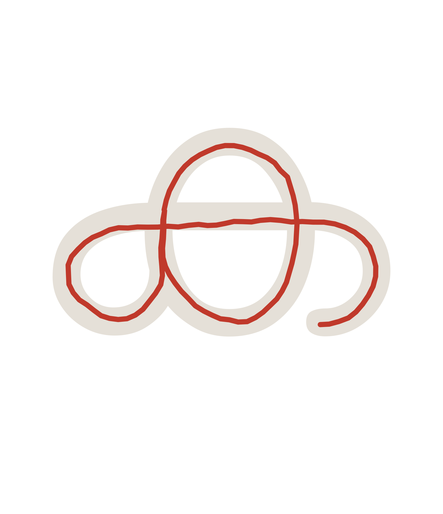
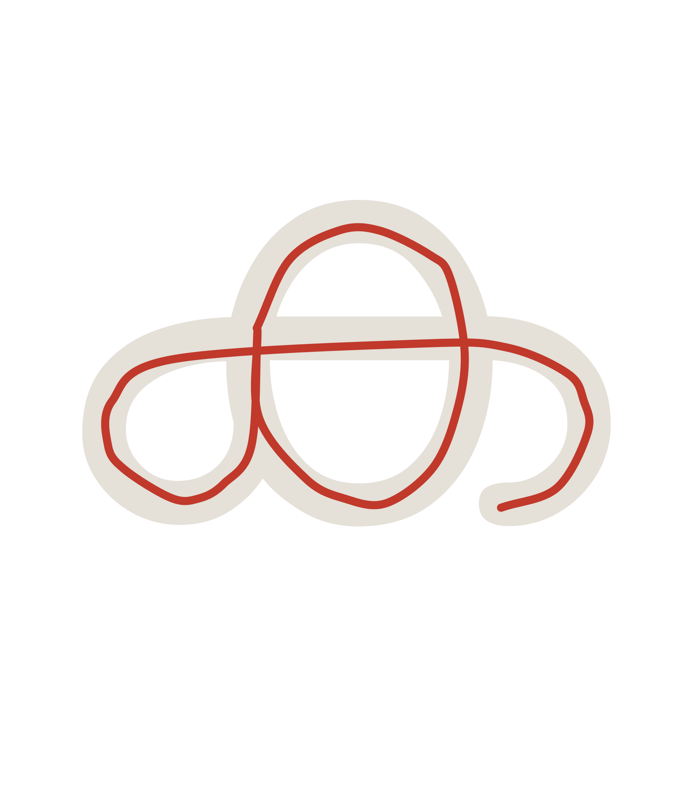

How it works
Everything is static - no server, no font file, no shaping engine in the browser. Glyph outlines are pre-shaped offline, a native speaker records real stroke order for ~290 atoms in a browser recorder, each stroke is refined against the font (pictures below), and composition turns those atoms into ~2000 animatable clusters. The README has the full pipeline walkthrough, file by file.
One stroke through the pipeline
ജ (ja)'s recorded stroke at each stage, over its ghost outline:




The full engineering story - including the approaches that didn't work - is in CENTERING_EXPERIMENTS.md.
Use it in your page
import { createStrokeWriter } from "jayasree";
const writer = createStrokeWriter(document.getElementById("stage"));
await writer.load(); // glyph outlines
await writer.loadStrokes(); // hand-authored strokes
await writer.play("നന്ദി", { speed: 1, count: 1 });Plain ES modules, no build step. Options for pen speed, ink thickness, spacing, and repeat count are documented in the README.
Contribute
The most valuable contribution is stroke data: a native speaker's hand tracing characters in the browser recorder - no coding required. Code contributions are welcome too; see CONTRIBUTING.md for the ground rules (clean code, tests, and never breaking an existing language's data).